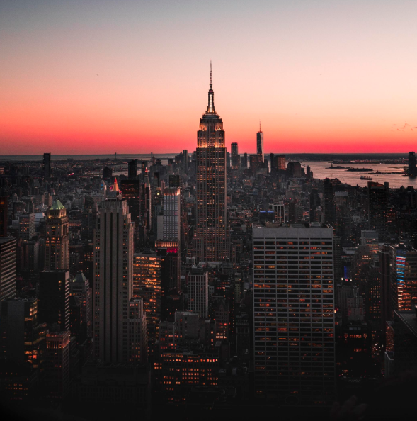

New York is composed of five boroughs -
Brooklyn, the Bronx, Manhattan, Queens and Staten Island.
It is home to 8.4 million people who speak more than 200 languages,
hail from every corner of the globe, and, together, are the heart
and soul of the most dynamic city in the world.
New York City is a global leader in industries ranging from
technology to transportation to financial services to fashion
to health care to education.
More than 52 million people visit NYC each year to experience the city's
unparalleled cultural institutions, visit our world-renowned parks,
and dine at our more than 24,000 restaurants.
The City government, which is led by a Mayor and a Council of 51 members,
employs more than 300,000 civil servants - including police officers,
firefighters, educators, doctors, nurses, artists, and engineers -
works to ensure the City promotes public safety, public health and opportunity.
New Yorkers elect the Mayor, Borough Presidents, City Council Members,
Public Advocate, and Comptroller.
These officials are collectively responsible for overseeing City government,
either directly or through their appointees.
The City Charter defines the authority of each official or body,
including community boards, and the relationships among them.
This is the statue of liberty, a popular tourist attraction located on Liberty Island
The Scenery in NYC
New York State has many beautiful places to visit.
While the view in the city is beautiful, the sounds are not that lovely.
Below you would see an example of the view and the sound
you'll deal with in NYC on daily basis
